항공기체정비기능사 (2005-01-30 기출문제)
1과목: 비행원리
1. 헬리콥터의 회전날개 설계시 회전날개 지름에 대한 설명으로 가장 올바른 것은?
- 비용면을 고려하여 가능한 한 크게 한다.
- 좋은 정지성능을 위하여 가능한 한 작게 한다.
- 필요한 성능을 낼 수 있는 최소의 크기로 한다.
- 성능과는 상관 없이 임의로 만든다.
(정답률: 88%)

2. 마하수(mach number)에 대한 설명 중 가장 올바른 것은?
- 비행속도가 일정하면 고도에 관계없이 마하수도 일정하다.
- 비행속도가 일정하면 마하수는 온도가 높을 수록 비례하여 커진다.
- 마하수의 단위는 m/sec이다.
- 마하수는 음속에 반비례한다.
(정답률: 61%)
3. 날개골의 형태에 있어서 공력특성을 좌우하는 주된 요소에 속하지 않는 것은?
- 날개골의 뒷전 반지름
- 날개골의 두께
- 날개골의 캠버
- 날개골의 앞전 반지름
(정답률: 55%)
4. 비행기 날개의 모양에 따른 분류를 한 것중 유도항력이 최소인 날개는?
- 직사각형 날개
- 타원형 날개
- 테이퍼형 날개
- 앞젖힘형 날개
(정답률: 69%)
5. 날개길이가 10m, 평균시위길이가 1.8m인 항공기 날개의 가로세로비(aspect ratio)는 얼마인가?
- 5.5
- 9.0
- 11.5
- 18.0
(정답률: 55%)
6. 비행중인 비행기의 항력이 추력보다 크면 나타나는 가장 중요한 현상은 무엇인가?
- 상승비행을 한다.
- 등속으로 비행한다.
- 감속 전진비행을 한다.
- 가속 전진한다.
(정답률: 75%)
7. 버페팅(buffeting)현상을 가장 올바르게 설명한 것은?
- 압축성 실속 또는 날개의 이상 진동
- 하중계수의 감소현상
- 조종력에 역작용을 발생하는 현상
- 가로방향 불안정 상태
(정답률: 87%)
8. 회전날개의 축에 토크가 작용하지 않는 상태에서도 일정한 회전수를 유지하게 되는 것은?
- 정지비행(hovering)
- 지면효과(ground effect)
- 조파항력(wave drag)
- 자동회전(auto rotation)
(정답률: 71%)
9. 대기권에서 전리층이 존재하는 곳은?
- 중간권
- 열권
- 극외권
- 성층권
(정답률: 74%)
10. 날개하부에 부착하는 보틸론(vortilon)의 가장 중요한 역할은?
- 디프 실속(deep stall)방지
- 항력(drag)감소
- 더치롤(Dutch roll)감소
- 옆미끄럼 방지
(정답률: 55%)
11. 비교적 두꺼운 날개를 사용한 비행기가 천음속 영역에서 비행할 때 발생하는 가로 불안정의 특별한 현상은?
- 커플링(Coupling)
- 디프실속(Deep stall)
- 날개드롭(Wing drop)
- 더치롤(Dutch roll)
(정답률: 47%)
12. 지구 포텐셜고도(Geopotential Height)를 정확히 서술한 것은? (단, go: 표준중력 가속도, h: 기하학적 고도, g: 고도에 따른 중력 가속도)
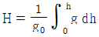
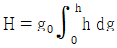
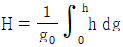
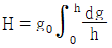
(정답률: 82%)
13. 왕복기관을 장비한 프로펠러 비행기의 이용마력(Pa)을 나타낸 것은?
- Pa =비행기속도 ⒡ 이용추력 / 프로펠러효율
- Pa = 제동마력 ⒡ 프로펠러효율
- Pa = 항력 ⒡ 비행기속도/75
- Pa = 항력 ⒡ 비행기속도/제동마력
(정답률: 50%)
14. 무게가 3000kg, 날개면적 20m2인 비행기가 해발고도에서 양력계수 0.96 인 상태로 등속 수평비행시 비행기의 최소속도를 구하면 대략 얼마 정도인가? (단, 공기의 밀도 ρ= 0.123kg.s2/m4 , 1m/s = 3.6km/h)
- 180 km/h
- 360 km/h
- 90 km/h
- 250 km/h
(정답률: 41%)
15. 받음각이 변하더라도 모멘트의 계수의 값이 변하지 않는 점을 무슨 점이라 하는가?
- 공기력중심
- 압력중심
- 반력중심
- 중력중심
(정답률: 51%)
16. 아래 내용의 the combustion chamber 이 의미하는 올바른 내용은?
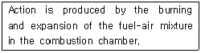
- 압축기
- 연소실
- 터빈
- 연료실
(정답률: 79%)
17. 다음에 설명되는 소화기의 종류로 가장 올바른 것은?
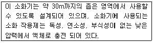
- CBM 소화기
- CO2소화기
- 포말 소화기
- 할론 소화기
(정답률: 39%)
18. 사고 방지의 마지막 단계는 시정책의 적용이며 3E를 완성함으로써 이루어진다 하였는데, 3E와 관계 없는 것은?
- 교육(education)
- 기술(engineering)
- 숙련(expert)
- 규칙(enforcement)
(정답률: 66%)
19. 튜브를 튜브 접합기구에 연결하는 방법에서 지름이 3/8in 이하인 알루미늄 튜브에 일반적으로 적용하는 방식은?
- 단일 플레어리스(flareless) 방식
- 이중 플레어리스(flareless) 방식
- 단일 플레어링(flaring) 방식
- 이중 플레어링(flaring) 방식
(정답률: 34%)
20. 금속의 표면상의 손상에서 표면에 날카로운 물체로 해서 좁고 얕게 새겨진 자국을 무엇이라 하는가?
- 찍힘(nick)
- 긁힘(scratch)
- 균열(crack)
- 패임(pitting)
(정답률: 77%)
2과목: 항공기정비
21. 항공기의 정비에서 운항정비를 가장 올바르게 설명한 것은?
- 벤치 체크이다.
- 장비 정기 점검이다.
- 기체 정시 점검이다.
- 기관 공장 점검이다.
(정답률: 61%)
22. 다이 페네트란트(Dye Penetrant)검사의 절차에서 사용되는 용어가 아닌 것은?
- 사전처리 세척
- 침투처리
- 유화처리
- 현미경 투시
(정답률: 70%)
23. 안전결선 작업방법에 대한 설명 중 가장 거리가 먼 것은?
- 3개 이상의 부품이 기하학적으로 밀착되어 있을 때에는 단선식 결선법을 사용한다.
- 안전결선 작업시 와이어를 당기는 방향은 부품을 죄는 방향과 일치되도록 한다.
- 안전결선의 끝 부분은 1∼2회 정도 꼬아 끝을 대각선 방향으로 절단한다.
- 안전결선에 사용된 와이어는 다시 사용해서는 안된다.
(정답률: 67%)
24. 힌지 핸들(hinge handle)에 대한 설명으로 가장 올바른 것은?
- 부품수가 많은 볼트나 너트를 신속하게 풀 때 사용한다.
- 단단하게 조여져 있는 볼트나 너트를 풀 때 사용한다.
- 협소한 공간에서 소켓을 이용하여 볼트나 너트를 풀 때 사용한다.
- 협소한 공간에서 라쳇을 이용하여 볼트나 너트를 신속하게 풀 때 사용한다.
(정답률: 50%)
25. 왕복기관의 저장방법에서 일시저장 일자로 가장 적합한 것은?
- 7일 이내
- 7∼14일 이내
- 14∼45일
- 45일 이상
(정답률: 38%)
26. 다음 영문의 내용으로 가장 올바른 것은?
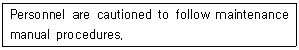
- 정비를 할 때는 상사의 자문을 구한다.
- 정비 교범절차에 따라 주의를 해야 한다.
- 정비 교범절차에 꼭 따를 필요는 없다.
- 정비를 할 때는 사람을 주의해야 한다.
(정답률: 90%)
27. 항공기의 잭 작업(JACKING)을 금지하는 바람의 속도는?
- 24Km/h이상
- 16Km/h이상
- 12Km/h이상
- 8Km/h이상
(정답률: 62%)
28. 항공기에 사용되는 니켈-카드뮴 축전지를 세척할 때의 주의사항 중 틀린 것은?
- 축전지를 세척할 때는 벤트 플러그를 막아야 한다.
- 와이어 브러쉬의 사용으로 심한 방전을 일으켜서는 않된다.
- 약한산으로 세척한다.
- 독성과 부식성이 없는 결정체는 브러쉬로 긁고 젖은 걸레로 닦아낸다.
(정답률: 38%)
29. 그림은 지상에서 항공기 표준 유도신호를 나타낸 것이다. 신호가 뜻하는 것은?
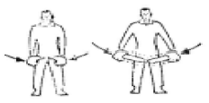
- 속도감소
- 촉 장착
- 정지
- 후진
(정답률: 84%)
30. 17ST (2017) - D RIVET에서″D ″는 무엇을 의미하는가?
- RIVET의 머리모양을 나타낸 것이다.
- RIVET의 길이를 나타낸 것이다.
- RIVET의 재질기호이며, 상온에서는 너무 강해 그대로는 리베팅(RIVETING)할 수 없으며 열처리를 한 후 사용 가능하다.
- RIVET의 재질기호이며 강한 강도가 요구되는 곳에 사용하며 열처리에 관계 없이 사용된다.
(정답률: 62%)
31. 시한성 부품의 영문약자 표시로 가장 올바른 것은?
- TRP
- TCTO
- IPC
- MPL
(정답률: 74%)
32. 그림은 최소측정값이 1/50㎜인 버니어 캘리퍼스의 눈금 읽기 도면이다. 틀린 사항은?
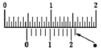
- 아들자의 0점 기선 바로 왼쪽의 어미자의 눈금을읽는다. (4.5㎜)
- 어미자와 아들자의 눈금이 일치하는 아들자의 눈금을 읽는다. (0.22㎜)
- 측정값은 4.72㎜이다.
- 아들자의 11번째 기선 바로위의 일치되는 어미자의 눈금을 읽는다. (0.21㎜이다.)
(정답률: 52%)
33. 방사선 전개도법으로 전개할 수 없는 것은?
- 원통
- 원뿔
- 깔때기
- 각뿔
(정답률: 40%)
34. 정비에 사용되는 부품 및 자제를 창고에 저장하기 전에 요구품질 기준을 확인하는 것은?
- 수령검사
- 저장검사
- 기준검사
- 창고검사
(정답률: 64%)
35. 검사의 신뢰성은 검사자의 경험과 능력에 따라 좌우되며 결함이 계속해서 진행되기전에 손쉽고, 가장 경제적으로 검사하는 방법은?
- 육안 검사
- 자분탐상 검사
- 와전류 검사
- 방사선투과 검사
(정답률: 88%)
36. 허니컴 샌드위치 구조(Honeycomb Sandwitch Structure)의 설명 중 틀린 것은?
- 표면이 평평하다.
- 충격흡수가 우수하다.
- 집중하중에 강하다.
- 단열효과가 좋다.
(정답률: 59%)
37. 헬리콥터의 주요 3조종계통에 속하지 않는 것은?
- 동시피치조종계통
- 자동조종계통
- 주기피치조종계통
- 방향조종계통
(정답률: 76%)
38. 메뉴얼 조종장치(Manual Control system)에 관한 설명으로 가장 올바른 내용은?
- 대형 항공기에 적합하다.
- 신뢰성은 높으나 무겁고, 정비가 어렵다.
- 동력원이 필요 없다.
- 컴퓨터에 의해 조종계통을 자동적으로 제어한다.
(정답률: 25%)
39. 항공기 날개(WING)의 가장 기본적인 구조부재는?
- 스트링거(STRINGER)
- 스파(SPAR)
- 리브(RIB)
- 스킨(SKIN)
(정답률: 40%)
40. 낫셀에 대한 설명 중 가장 거리가 먼 내용은?
- 낫셀은 기관 및 기관에 부수되는 각종 장치를 수용키 위한 공간을 마련한다.
- 바깥면은 공기역학적 저항을 작게하기 위하여 유선형으로 되어있다.
- 동체안에 기관을 장착시에도 낫셀을 설치해야 한다.
- 일반적으로 날개의 위.아래나 날개의 앞전에 장착된다.
(정답률: 47%)
3과목: 항공기체
41. 소형 항공기에 사용되는 가장 일반적인 바퀴의 형태는?
- 스플리트형 바퀴
- 플랜지형 바퀴
- 드롭센터형 바퀴
- 고정 프랜지형 바퀴
(정답률: 37%)
42. 그림과 같은 응력-변형률 선도에서, 보통 기체역학적으로 인장강도라고 생각되는 점은?
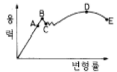
- A
- B
- C
- D
(정답률: 48%)
43. 트러스형 구조를 가진 헬리콥터의 가장 큰 장점은?
- 정비가 용이하다.
- 유효공간이 크다.
- 정밀하게 제작할 수 있다.
- 공기저항을 줄일 수 있다.
(정답률: 68%)
44. 항공기를 장시간 공항에 계류시킬 때 사용하는 브레이크는 어느 것인가?
- 정상 브레이크
- 보조 브레이크
- 파아킹 브레이크
- 비상 브레이크
(정답률: 73%)
45. 모노코크형(Monocoque Type)동체의 구성요소로 가장 올바른 것은?
- 외피(Skin),정형재(Former),벌크헤드(Bulkhead)
- 외피(Skin),론저론(Longeron),스트링어(Stringer)
- 프레임(Frame),론저론(Longeron),스트링어(Stringer)
- 외피(Skin), 정형재(Former), 튜브(Tube)
(정답률: 78%)
46. 헬리콥터의 진동중 저주파수 진동을 가장 올바르게 표현한 것은?
- 꼬리회전날개 1회전당 한번 일어나는 진동
- 주회전날개 1회전당 한번 일어나는 진동
- 꼬리회전날개 1회전당 두번 일어나는 진동
- 주회전날개 1회전당 두번 일어나는 진동
(정답률: 60%)
47. FRP(Fiber Reinforced Plastic)에 주로 사용되고 있는 열경화성 수지는?
- 멜라민 수지
- 실리콘 수지
- 폴리염화비닐
- 에폭시 수지
(정답률: 57%)
48. 그림들은 지지점의 종류에 따른 보의 종류를 나타낸 것이다. 이 중에서 단순보를 나타낸 것은?
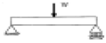
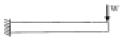
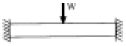
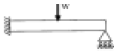
(정답률: 69%)
49. 항공기의 실제 무게와는 관계가 없는 것은?
- 자기무게
- 최대무게
- 영연료무게
- 테어무게
(정답률: 68%)
50. 헬리콥터 코리올리 효과와 관계가 없는 것은?
- 심한 진동이 발생한다.
- 깃의 뿌리 부근에 이상 응력이 발생한다.
- 전진 깃은 가속되어 앞서 간다.
- 연료가 절약된다.
(정답률: 63%)
51. 시효경화를 가장 올바르게 설명한 것은 어느 것인가?
- 입자의 분포가 서서히 균일해지는 성질
- 시간이 지남에 따라 재료의 취성이 변하는 성질
- 스스로 연해지는 성질
- 시간이 지남에 따라 강도와 경도가 증가하는 성질
(정답률: 76%)
52. 접개들이식 착륙장치의 작동 순서가 가장 올바르게 나열된 것은?(오류 신고가 접수된 문제입니다. 반드시 정답과 해설을 확인하시기 바랍니다.)
- 착륙장치레버작동-다운래치풀림-도어열림-착륙장치내려감-도어가 닫힘
- 착륙장치레버작동-도어열림-다운래치풀림-착륙장치내려감-도어가 닫힘
- 착륙장치레버작동-업래치풀림-도어열림-착륙장치내려감-도어가 닫힘
- 착륙장치레버작동-도어열림-업래치풀림-착륙장치내려감-도어가 닫힘
(정답률: 31%)
53. 직경 5㎝인 원형 단면봉에 1,000㎏f의 인장하중이 작용할 때 단면에서의 응력은 몇 ㎏f/㎝2 인가?
- 25.5
- 40.2
- 50.9
- 61.6
(정답률: 57%)
54. 금속재료의 열처리 중 뜨임(Tempering)이란?
- 담금질후의 재료를 낮은 임계점 이하의 온도로 가열후 공기중에서 냉각시켜 경화에서 생긴 잔류응력제거
- 재료를 가열후 급속히 냉각시키는 처리
- 기계가공 등으로 생긴 내부응력을 제거하기 위해 높은 임계점이상으로 가열후 대기중에서 냉각시키는 열처리
- 원자의 확산이 활발히 행해지는 임계점까지 가열하여 그 온도를 유지한후 노(Furnace)안에서 서냉하는 열처리
(정답률: 48%)
55. 항공기의 여압동체와 같이 반복 하중을 받는 구조는 정하중에서 재료의 극한강도보다 훨씬 낮은 응력상태에서도 파단되는데, 이와같이 반복하중에 의하여 재료의 저항력이 감소되는 현상을 무엇이라 하는가?
- 좌굴
- 피로
- 크리프
- 응력집중
(정답률: 70%)
56. 충격에 잘 견디는 성질이며, 찢어지거나 파괴가 되지 않는 금속의 성질을 무엇이라고 하는가?
- 전성
- 취성
- 인성
- 연성
(정답률: 48%)
57. 항공기 구조하중 중 동하중에 해당하지 않는 사항은?
- 교번하중
- 반복하중
- 표면하중
- 충격하중
(정답률: 40%)
58. 항공용 타이어 구조에서 타이어의 마멸을 측정하고 제동 효과를 주는 곳은?
- tread의 홈
- breaker
- core body
- chafer
(정답률: 51%)
59. Aℓ1⑤0 에서 "1" 이 나타내는 의미는?
- 99% 순수 알루미늄
- 알루미늄-구리계 합금
- 알루미늄-망간계 합금
- 알루미늄-마그네슘계 합금
(정답률: 77%)
60. 그림과 같은 힘의 합성을 벡터(vector)식으로 나타낸 것은?(문제 오류로 보기가 없습니다. 여기서는 1번을 누르면 정답 처리 됩니다.)
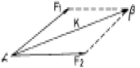
- 보기 없음
- 보기 없음
- 보기 없음
- 보기 없음
(정답률: 86%)